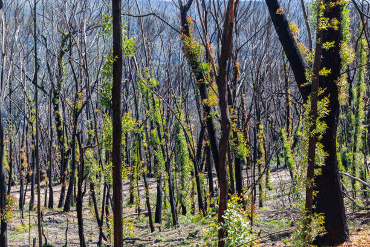
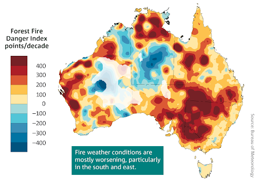
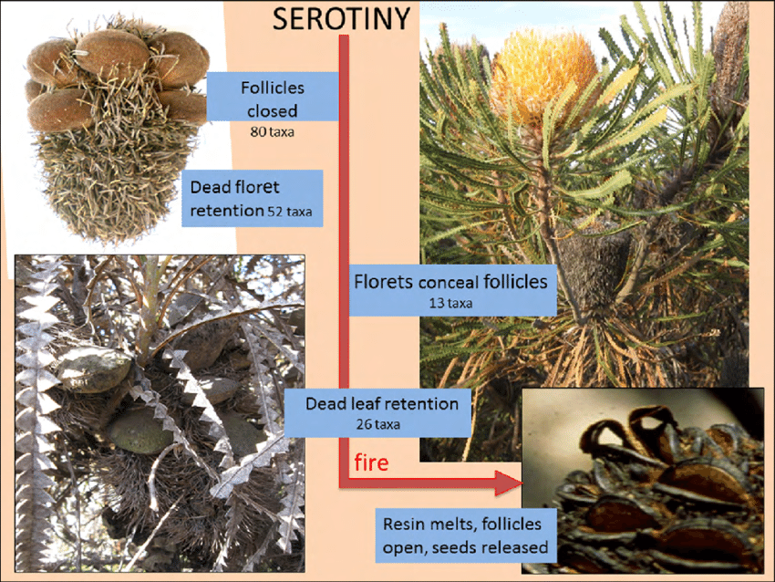
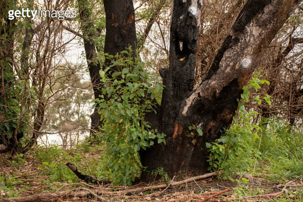
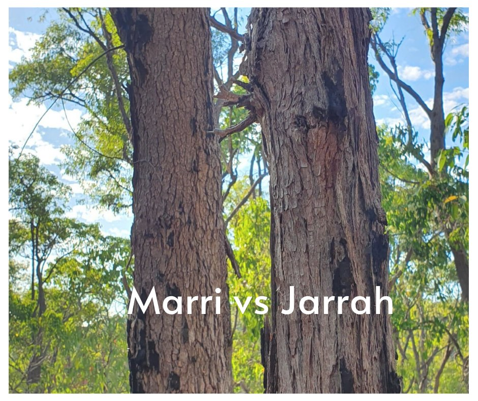
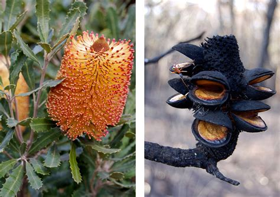
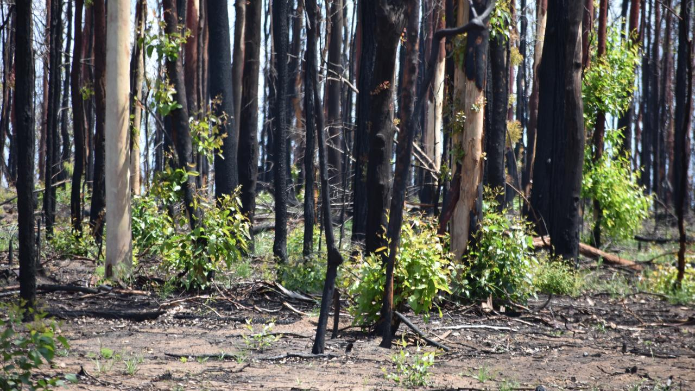

Plant Adaptations to Bushfire
Term 1, Week 4, Lesson 1
Do Now
Look at the image below and answer the question in your book:
After a bushfire passes through this WA bushland, what do you notice about these plants? How do you think they survived?

Write two observations and one prediction. You have 3 minutes.
Daily Review
Answer the following 5 multiple choice questions in your book:
- Which of the following is an example of a structural plant adaptation to dry conditions?
- A plant bending its leaves away from the sun
- A plant producing toxic chemicals to repel insects
- Sclerophyllous leaves with a thick waxy cuticle
- A plant only flowering during rain
- Proteoid (cluster) roots are an adaptation that helps plants cope with:
- Waterlogged soils
- Bushfire damage
- Nutrient-poor soils
- Salt spray
- A plant that stores water in its thick stem is showing which type of adaptation?
- Behavioural
- Physiological
- Structural
- Ecological
- Mangrove trees have aerial roots (pneumatophores). These allow them to:
- Absorb more sunlight
- Access oxygen in waterlogged, muddy soils
- Reduce salt intake from seawater
- Store water for the dry season
- The production of salt-excreting glands in mangrove leaves is an example of:
- A structural adaptation
- A behavioural adaptation
- A physiological adaptation
- A learned response
| Q | Answer |
|---|---|
| 1 | C) Sclerophyllous leaves with a thick waxy cuticle |
| 2 | C) Nutrient-poor soils |
| 3 | C) Structural |
| 4 | D) Store water for the dry season |
| 5 | C) A physiological adaptation |
Learning Intentions
Today we are learning about how Australian plants have evolved fire-adaptive traits — including serotinous cones, lignotubers, thick bark and epicormic buds — that allow them to survive or regenerate after bushfire.
Success Criteria
You will be successful if you have:
Keywords
- Serotinous
- Describing seed cones or pods that remain sealed and only open to release seeds when triggered by high heat from fire. From the Latin serotinus, meaning “late” — a reference to the delayed seed release.
- Lignotuber
- A woody swelling at the base of a plant’s stem or trunk that stores carbohydrates and contains dormant buds, enabling regrowth after fire or drought. Common in WA eucalypts, sheoaks and grass trees.
- Epicormic bud
- A dormant bud that lies beneath the bark of a tree, protected from heat. After fire removes the canopy, these buds activate and produce new shoots directly from the trunk or branches.
- Fire ecology
- The study of the role of fire in ecosystems, including its effects on plants, animals and the physical environment. In Australia, fire is considered a natural part of many ecosystems — especially in the south-west and Kimberley.
Learning Activities
Activity 1 — I DO: Fire and Australian Plants
Why Is Fire Part of Australian Ecosystems?
Australia is one of the most fire-prone continents on Earth. Lightning strikes, hot summers and dry vegetation have meant that fire has occurred naturally for millions of years. As a result, many Australian plants have not just learned to survive fire — they have evolved to take advantage of it.

Key Fire-Adaptive Traits
1. Serotinous Cones and Follicles
Some plants produce seed-containing structures (cones or follicles) that remain tightly sealed until exposed to the intense heat of a bushfire.

Further reading: Seed release and dispersal in south-western Australia
- The heat melts a resinous seal, allowing the follicles to open and release seeds.
- Seeds fall onto a cleared, nutrient-rich (ash-covered) seedbed with reduced competition from other plants.
- WA examples: Banksia, Hakea — both members of the Proteaceae family.
Type of adaptation: Structural (follicle structure) and physiological (heat-triggered response)
2. Lignotubers
A lignotuber is a hard, woody swelling found at the base of the stem, just at or below the soil surface.

- Contains a dense store of carbohydrates (energy) and dormant buds.
- When the above-ground plant is killed by fire, the buds activate and rapidly produce new shoots using stored energy.
- The soil insulates the lignotuber from the heat of the fire.
- WA examples: Eucalyptus marginata (jarrah), Eucalyptus gomphocephala (tuart).
Type of adaptation: Structural
3. Thick Bark
Some large trees have evolved exceptionally thick outer bark that acts as a fire-resistant insulating layer.

- The bark insulates the living cambium layer beneath it from the heat of the fire.
- The outer bark chars and falls away, but the tree underneath survives.
- WA examples: Jarrah (Eucalyptus marginata), Karri (Eucalyptus diversicolor), Tuart (Eucalyptus gomphocephala).
Type of adaptation: Structural
4. Epicormic Buds
Epicormic buds are dormant meristematic cells that lie beneath the bark along the trunk and major branches.
- When the canopy is destroyed by fire, light reaches the trunk and triggers the buds to sprout.
- New leaves can emerge within weeks of a fire, rapidly restoring photosynthesis.
- WA examples: Most eucalyptus species (jarrah, marri, karri).
Type of adaptation: Structural (bud location) and physiological (hormonal activation triggered by light)
Summary Table
| Trait | How It Works | Type of Adaptation | WA Example |
|---|---|---|---|
| Serotinous follicles | Heat melts resin seal; seeds released onto cleared soil | Structural / Physiological | Banksia, Hakea |
| Lignotuber | Stores energy and buds underground; regrowth after fire | Structural | Jarrah, grass tree |
| Thick bark | Insulates cambium from heat | Structural | Jarrah, karri, tuart |
| Epicormic buds | Dormant buds under bark sprout after canopy loss | Structural / Physiological | Eucalyptus species |
Check for Understanding
Match each term (A–D) to the correct description (1–4):
| Term | Description |
|---|---|
| A) Serotinous | 1. Dormant buds beneath the bark that activate after fire |
| B) Lignotuber | 2. Cones/follicles that only open when exposed to intense heat |
| C) Epicormic bud | 3. A woody base storing energy and buds for post-fire regrowth |
| D) Thick bark | 4. Insulating outer layer that protects the living cambium |
Answers: A–2, B–3, C–1, D–4
Activity 2 — WE DO: Analysing Post-Fire Regrowth in WA Plants
As a class, we will examine images of two WA plants — a banksia and a jarrah tree — photographed before and after a bushfire.


Guided Analysis Table
For each plant, identify the fire-adaptive trait, classify it (S — Structural, B — Behavioural, P — Physiological), and explain how it works:
| Plant | Fire-Adaptive Trait Observed | Type (S / B / P) | How It Improves Survival |
|---|---|---|---|
| Banksia | Open follicles releasing seeds | ||
| Banksia | Low, re-sprouting shrub growth | ||
| Jarrah | Epicormic shoots on trunk | ||
| Jarrah | Charred but intact bark |
Discussion Questions
- Why is it an advantage for seeds to be released after fire rather than before?
- How does the jarrah tree benefit from having both thick bark and epicormic buds?
- Would these fire-adaptive traits be useful in a WA coastal mangrove ecosystem? Why or why not?
Activity 3 — YOU DO: Plant Adaptations to Bushfire
Complete the worksheet: 141-plant-adaptations-bushfire-you-do.docx
You will classify fire-adaptive traits, explain how each one works, and identify an example WA plant species for each trait.
Work independently. You have 10 minutes.
Notes
Use this space to write any important points from today’s lesson.
Reflection
- Which of the following best describes serotiny?
- A plant that grows back using stored underground energy
- A plant that releases seeds from cones after fire
- A plant that has thick bark to resist burning
- A plant with buds beneath the bark
- A lignotuber is most useful to a plant because it:
- Insulates the trunk from fire heat
- Stores carbohydrates and dormant buds for regrowth
- Releases seeds after a fire
- Hardens the outer bark
- Epicormic buds are activated when:
- Rain falls after a long drought
- The plant is attacked by insects
- The canopy is removed and light reaches the trunk
- Temperatures drop below zero
- Thick bark in jarrah is classified as:
- A physiological adaptation
- A behavioural adaptation
- A structural adaptation
- A learned behaviour
- Short answer: Explain how serotinous seed release gives a banksia an advantage over plants that release seeds at any time of year. Use the word “competition” in your answer.
Home-study
Find out the name of one other WA plant species (not mentioned in today’s lesson) that has a fire-adaptive trait. Describe the trait and explain whether it is structural, behavioural or physiological. Write your answer in 3–4 sentences.